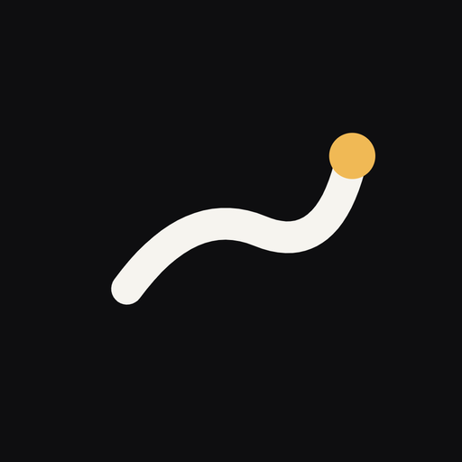

Lighter
같은 시간·같은 코스·비슷한 페이스 러너와 번개 러닝
혼자 달리다 지쳤다면, 버튼 하나로 지금 내 주변에서 페이스가 맞는 러너를 찾아보세요. 정해진 슬롯에 등록된 코스에서 만나 함께 달려요.
App Store에서 곧 만나요
만 19세 이상 · 휴대전화 본인인증(PASS) 후 가입할 수 있어요
이렇게 달려요
-
슬롯을 고르면 자동 매칭
아침 07:00–09:00, 저녁 17:00–20:00 사이 30분 단위 슬롯 중 하나를 고르세요. 같은 슬롯·같은 코스에서 페이스(분/km)가 맞는 러너와 자동으로 연결돼요. 여는 사람도, 수락·거절도 없어요.
-
등록된 코스에서만 만나요
한강·도심·공원 등 미리 검증한 러닝 코스에서만 만나요. 만남 장소는 코스의 고정 지점으로 안내하고, 내 실시간 위치는 다른 참여자에게 보이지 않아요.
-
달리는 동안 지켜주는 안전 기능
가족·친구를 안전 연락처로 지정하면 러닝 중 실시간 위치가 공유되고, 러닝이 끝나면 자동으로 멈춰요. 위급할 땐 SOS를 길게 눌러 현재 위치를 보낼 수 있어요.